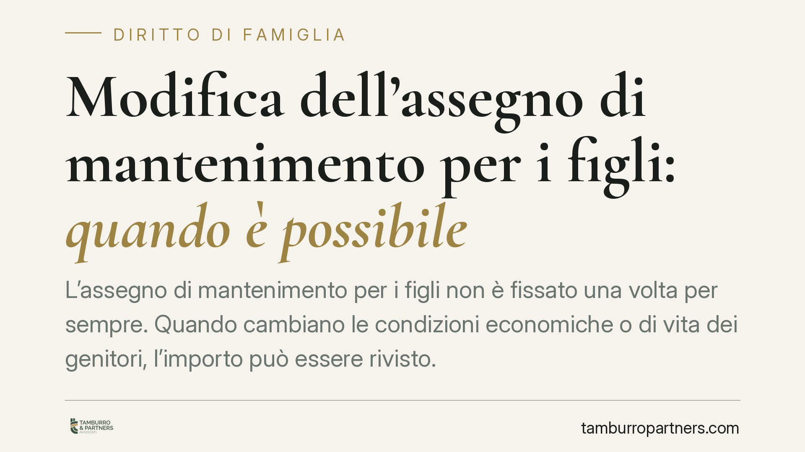

Modifica dell'assegno di mantenimento per i figli: quando è possibile
L'assegno di mantenimento per i figli non è fissato una volta per sempre. Quando cambiano le condizioni economiche o di vita dei genitori, l'importo può essere rivisto. La Cassazione ha delineato i presupposti della revisione, chiarendo cosa rileva davvero e cosa no. Ecco il quadro aggiornato e le indicazioni pratiche per chi valuta un ricorso.

Il principio di fondo: rebus sic stantibus
L'assegno di mantenimento dei figli viene quantificato in base alla situazione esistente al momento della separazione o del divorzio. Ma quella situazione non è immutabile.
Vale la clausola rebus sic stantibus: le condizioni stabilite valgono finché restano invariate le circostanze di fatto che le hanno giustificate. Se quelle circostanze cambiano in modo significativo, l'importo può essere modificato, in aumento o in riduzione.
La domanda di revisione si propone al Tribunale. Chi la avanza deve provare il mutamento: non basta dedurre un cambiamento generico, occorre dimostrare che è sopravvenuto, concreto e rilevante rispetto alla situazione precedente.
Inquadramento normativo
La revisione delle condizioni relative ai figli trova fondamento nelle norme sulla responsabilità genitoriale e sul mantenimento della prole (artt. 337-ter e 337-quinquies del Codice civile), che consentono al giudice di adottare in ogni tempo i provvedimenti opportuni nell'interesse del minore.
La Corte di Cassazione Civile ha progressivamente precisato quali fatti integrano un valido presupposto di modifica e quali invece restano irrilevanti. È su questa giurisprudenza che si gioca, nella pratica, l'esito del ricorso.
Cosa rileva secondo la Cassazione
La crescita del figlio. L'aumento dell'età comporta tendenzialmente maggiori spese (istruzione superiore, attività, autonomia). È un fattore che può giustificare un adeguamento dell'importo, purché documentato.
La nascita di nuovi figli. Se il genitore obbligato ha altri figli da mantenere, la sua capacità economica complessiva si ridistribuisce. La Cassazione riconosce che il nuovo nucleo familiare incide sulla valutazione, senza però azzerare gli obblighi verso i figli precedenti.
La nuova convivenza. Una nuova relazione stabile può modificare la situazione economica di entrambi i genitori. Rileva se incide concretamente sulle risorse disponibili o sui bisogni del figlio.
La riduzione volontaria del reddito. Qui la giurisprudenza è rigorosa. Se il genitore obbligato riduce il proprio reddito in modo volontario o pretestuoso, il giudice può non tenerne conto. Non si premia chi si impoverisce ad arte per pagare meno.
Le modifiche nell'affidamento. Il passaggio a un affidamento condiviso con tempi di permanenza diversi, o un mutamento nel collocamento, incide sulla ripartizione delle spese e può giustificare la revisione.
Implicazioni pratiche
Per il genitore obbligato, la revisione è lo strumento per adeguare l'assegno a una reale diminuzione di capacità economica: perdita del lavoro, malattia, nuovi carichi familiari. Attenzione però: la riduzione deve essere genuina e documentabile.
Per il genitore collocatario, la revisione consente di chiedere un aumento quando le esigenze dei figli crescono o quando migliorano le condizioni economiche dell'altro genitore.
In entrambi i casi l'onere della prova è decisivo. Il Tribunale non modifica nulla sulla base di affermazioni: servono documenti fiscali, buste paga, contratti, prove delle nuove spese. Un ricorso mal istruito viene respinto anche quando il mutamento esiste davvero.
Un aspetto spesso trascurato: la modifica non ha effetto retroattivo automatico sui periodi anteriori alla domanda. Rinviare il ricorso significa, di norma, rinunciare agli arretrati per il periodo pregresso.
Cosa fare in concreto
- Raccogliete la documentazione del mutamento: redditi, spese straordinarie dei figli, variazioni lavorative o familiari. Senza prove, la domanda non regge.
- Valutate l'entità del cambiamento: deve essere significativo e stabile, non temporaneo o marginale. Un calo passeggero non basta.
- Non riducete il reddito in vista del ricorso: comportamenti pretestuosi vengono sanzionati dal giudice e indeboliscono la posizione.
- Agite tempestivamente: la revisione produce effetti dalla domanda, non prima. Attendere comporta la perdita degli importi relativi al periodo intermedio.
- Verificate la via dell'accordo: una modifica consensuale, omologata o concordata, è spesso più rapida e meno conflittuale del contenzioso.
Consigliamo di analizzare caso per caso i presupposti prima di depositare il ricorso: la valutazione della rilevanza del mutamento richiede un esame tecnico della documentazione e della giurisprudenza applicabile.
Disclaimer
Contributo informativo a cura di Tamburro & Partners - Avv. Giuseppe Tamburro. Non costituisce parere legale.
Ogni famiglia ha il suo equilibrio.
Separazione, divorzio, affidamento, assegno: se vuoi un confronto riservato su una specifica situazione, scrivi allo studio. Ti rispondiamo entro un giorno lavorativo.